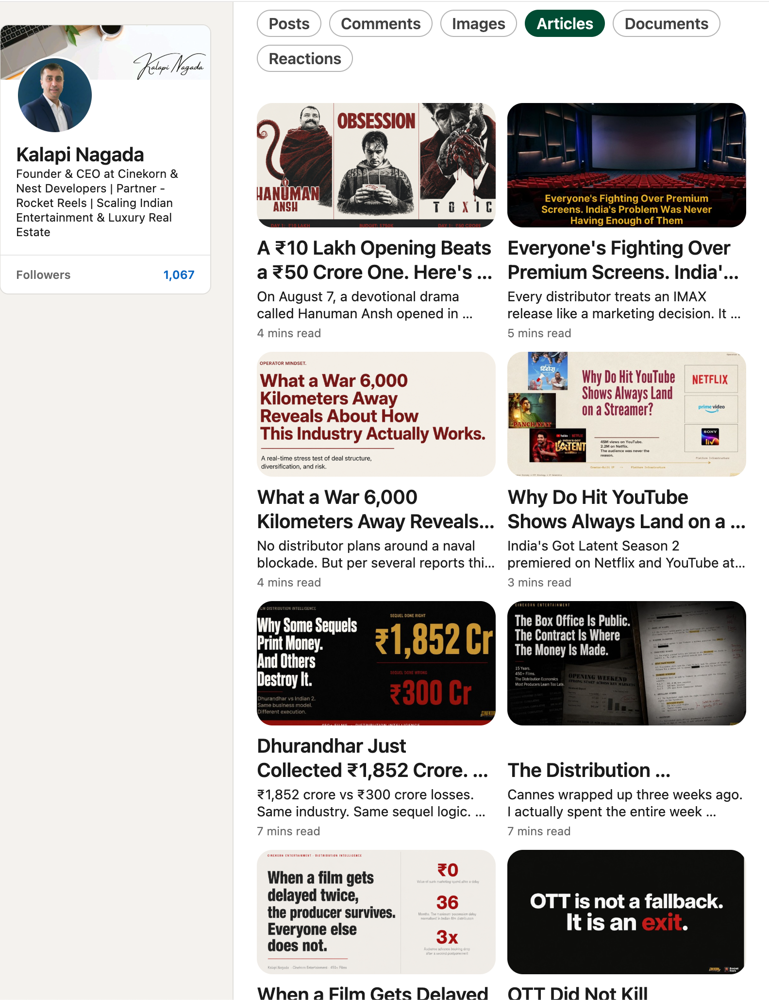
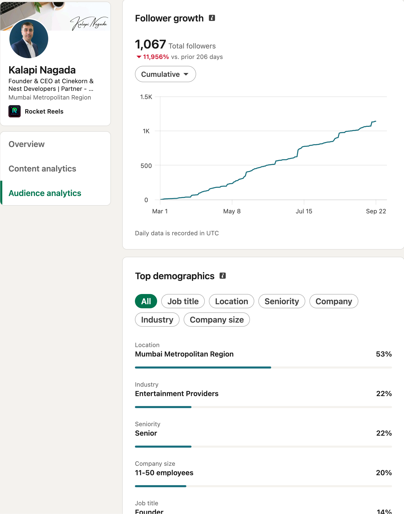

Case 06 · Kalapi LinkedIn
Founder Presence, Not Just a Company Page
Narrative, cadence, and positioning for Kalapi Nagada on LinkedIn, run alongside the corporate channel so the founder voice stays distinct.
Context
A founder channel next to a company channel
Kalapi Nagada is a founder of Cinekorn Entertainment. The personal LinkedIn presence needed to reflect industry positioning without becoming a second company bulletin.
Problem
Company updates are not founder narrative
If the founder feed only repeats announcements, it adds little beyond the corporate page.
Strategy
Separate roles, shared standards
Company page = institutional voice. Founder profile = perspective, pattern recognition, and industry context — film positioning, trailer promises, release clashes, and why good films still underperform before a single ticket is sold.
Selected posts
Founder narrative in public
These posts are the editorial lane: explain a film before you sell it, treat trailers as promises, name failure modes early, and treat a date clash as a playbook — not a hope.
If marketing can’t explain the film, neither will the audience
Rise of the Guardians and Bombay Velvet as case studies in ambition without a one-sentence sell.
Open on LinkedIn → PositioningAmbition audiences can’t understand before the ticket
Same thesis, companion framing: fix positioning before opening weekend hopes take over.
Open on LinkedIn → PositioningOne sentence before we position a film
If the team cannot state the film clearly, the campaign will mirror that indecision.
Open on LinkedIn → TrailersA trailer is a promise — sometimes a legal one
Yesterday’s false-advertising risk versus Stree’s undersell that still survived on film strength.
Open on LinkedIn → Failure modesGood films fail before the first frame plays
Wrong genre, stripped identity, abandoned promo, unmanaged controversy — positioning problems, not only creative ones.
Open on LinkedIn → Release strategyTwo dates, same weekend — the four-move playbook
Shift timeline, control format, change audience, or price the moment when a clash is locked.
Open on LinkedIn →Evidence
Profile and performance surface





Results
A clearer founder lane
Average daily impressions rose about +265%, engagements about +460%, engagement rate +0.48 pts, and followers per day about +93% in the compared windows.
Takeaway
What this showed
Founder LinkedIn works best when it is treated as a distinct narrative system — industry pattern recognition and positioning judgment — not as a mirror of the company page.